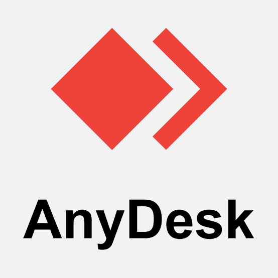

AnyDesk
Software de escritorio remoto ligero y rápido, creado en Alemania. Cada equipo recibe un código de acceso único; basta con introducirlo y aceptar la solicitud para conectarse. Funciona en Windows, macOS, Linux, Android e iOS, y permite transferir archivos y sesiones de soporte técnico.